Oisillons tombés du nid
Ce qu’il faut savoir pour commencer, c’est qu’il n’est pas rare qu’on trouve un oisillon par hasard hors d’un nid et que l’on pense que celui-ci s’est perdu ou a été abandonné ou rejeté par ses parents sans que ce ne soit vraiment le cas. En effet, deux semaines avant de s’avoir réellement voler, les petits quittent souvent leur nid pour découvrir le monde. Ils ne s’éloignent jamais beaucoup et continuent d’être nourris par les parents qui les retrouvent grâce à leurs cris. Ce qu’il faut donc faire avant toute chose, quand vous découvrez un oisillon, est de vérifier s’il y a un nid à proximité. Si c’est le cas remettez l’oisillon dans son nid. Ne vous inquiétez pas, le toucher ne fera pas fuir les parents. C’est une légende ! Les oiseaux ont en fait un très mauvais odorat !Si vous ne voyez pas de nid, laissez l’oisillon où il se trouve, et observez le discrètement (ça veut dire assez loin !!!) pour éviter d’effrayer les parents qui voudraient venir le nourrir. Si au bout de quelques heures vous n’avez pas vu venir les parents alors on peut penser qu’il est véritablement perdu…
Je rappelle que la législation vous interdit de prendre cet oiseau. Vous devez normalement le laisser à sa place et appeler un centre de soins ou le garde-chasse de votre coin qui le prendra en charge. Certains vétérinaires sont également habilités à s’occuper d’animaux sauvages mais pas tous donc téléphonez avant de vous présenter sous peine de vous prendre un sermon voire un violent rejet (oui oui je dis ça par expérience… pour avoir amené à une clinique un misérable oiseau que j’ai trouvé en train d’agoniser pour faire abréger ses souffrances…). Mais entre vous et moi on sait que ni l’un ni l’autre ne peuvent se déplacer chaque fois qu’un petit oisillon tombe de son nid ou que quelqu’un trouve un oiseau blessé…
Vous pouvez donc choisir de le laisser là (mettez-le dans ce cas en hauteur ou dans un buisson pour le protéger d’éventuels prédateurs) ou vous pouvez choisir de le prendre avec vous mais attention je vous préviens d’ores et déjà : s’occuper d’un oisillon n’est pas anodin, demande beaucoup de travail et une présence H24 !
Urgence : Premiers soins
Avant toute chose la première chose à faire est de le tenir au chaud ! Un oisillon non plumé a besoin constamment de chaleur. Elle est vitale pour lui ! Un oiseau en hypothermie sera faible, incapable d’ouvrir le bec quand vous lui proposerez à manger. Une bouillotte à 38° maximum, isolée par du papier absorbant ou un petit linge éponge, et changée régulièrement fera l’affaire. Les bouteilles de soda vide sont pratiques aussi puisqu’elles ne se déforment pas trop avec l’eau chaude. Evidemment si vous disposez d’une lampe UV c’est le must ! Mais on est d’accord on n’a pas tous ça chez nous. Installez le petit dans une tasse garnie de Kleenex (pas de ouate, elle absorberait et retiendrait les bactéries) que vous changerez régulièrement aussi. Posez ensuite le nid de fortune sur ou contre la bouillotte.
Identifier un oisillon
La deuxième chose à faire est d’identifier de quelle espèce est l’oisillon. Cela vous permettra de connaitre le régime alimentaire que vous devez adopter car tous les types d’oiseaux ne mangent pas la même chose !
- Plusieurs catégories d'oiseaux qui auront des alimentations bien spécifiques :
- Les granivores
- Les insectivores
- Les martinets et les hirondelles
- Les corvidés (corneilles, geais, pies...)
- Les colombidés (pigeons,tourterelles...)
- Les mouettes
- Les rapaces
LES GRANIVORES ET LES INSECTIVORES
Le plus difficile sera de discerner un oisillon granivore d’un oisillon insectivore.
Le point essentiel pour différencier ces deux types d’oiseaux est la taille de son bec ou plutôt sa largeur. Le bec du granivore aura tendance à être large tandis que celui de l’insectivore aura tendance à être fin.
Dans tous les cas quand vous avez un doute (surtout les premiers jours où ce n’est pas toujours évident de les différencier) sachez que tout oisillon qu’il soit granivore ou insectivore est nourri d’insectes par ces parents les premiers jours de vie. Aussi en cas de doute instaurer un régime insectivore et faites identifier votre protégé le plus vite possible (vous pouvez poster une photo sur le site de doctissimo oiseaux où des personnes viendront vous aider à l’identifier).
| Voici un exemple d’évolution d’un oisillon granivore et d’un oisillon insectivore : | ||||
|---|---|---|---|---|
| UN GRANIVORE : il a un large bec |
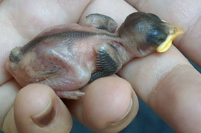 | 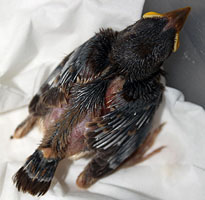 | 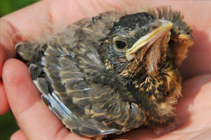 | 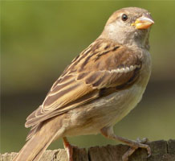 |
| UN INSECTIVORE : il a un bec fin |
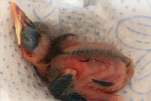 |  |
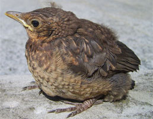 | 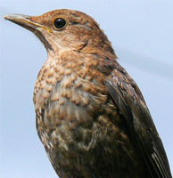 |
| L'EVOLUTION : | L’oisillon n’a qu’un jour ou deux. Il a les yeux encore fermés. Il a un besoin vital de chaleur. | L’oisillon a une petite dizaine de jours. Ces plumes sortent et commencent à recouvrir son corps. | L’oiseau est tout plumé. Sort du nid mais ne vole pas. Il joue avec sa nourriture sans toutefois manger réellement. Il n’est pas encore prêt à être autonome. | L’oiseau se nourrit seul et il vole. Votre protégé est adulte et prêt à être autonome. |
LES MARTINETS ET LES HIRONDELLES
On confond souvent les martinets aux hirondelles. Les éléments essentiels à retenir sont que le martinet a une couleur sombre sur l'ensemble de son corps alors que l'hirondelle a le ventre clair.
Contrairement aux hirondelles, les martinets ne se posent presque jamais. Un martinet au sol est en danger de mort. En effet un martinet au sol est incapable de prendre son envol. De ce fait lorsqu'ils sont
posés ils donnent l'impression d'être complètement couchés.
| L'hirondelle rustique | L'hirondelle de fenêtre | Le martinet noir |
 |
 |
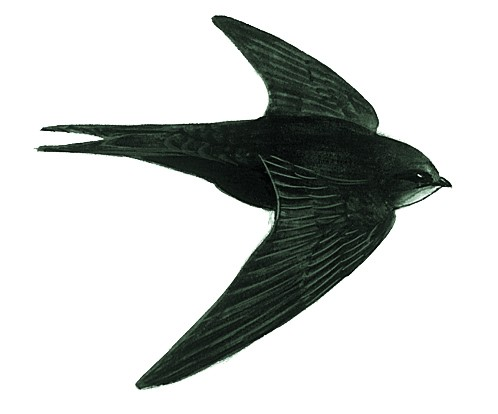 Il a des ailes plus longues et en arc de cercle, le ventre brunâtre et non blanc ou crème comme les hirondelles. Ils ne se posent quasiment jamais. |
| Voici l'évolution d'un oisillon hirondelle et d'un oisillon martinet : | |||
|---|---|---|---|
| L'hirondelle | 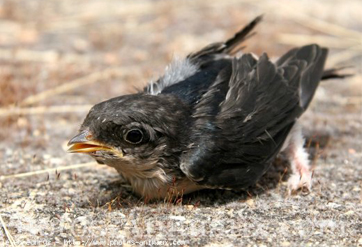 | 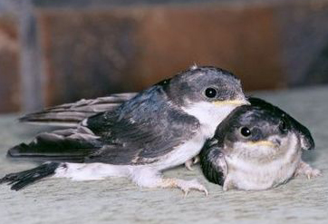 | 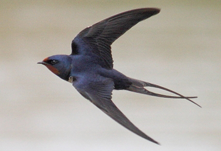 | Le martinet | 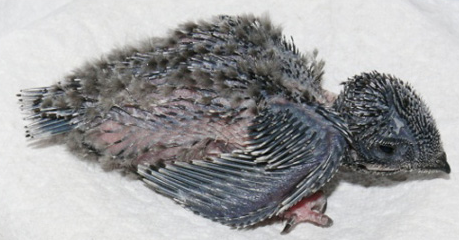 |

|
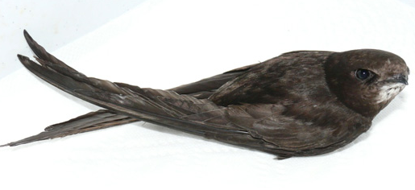 |